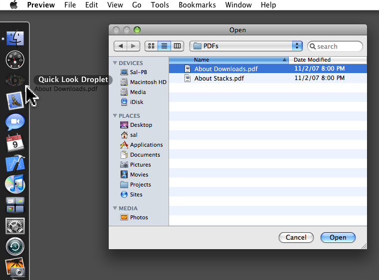
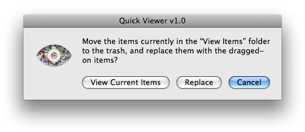
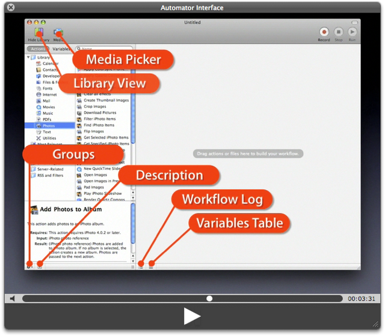

Quick Viewer and the Quick Look Droplet
The new Quick Look feature in Mac OS X lets you view many types document and media files without having to open them in an application. It's a handy and convienient way to locate the materials you are looking for.
However, Quick Look can be used for more than a means to locate information, it can also be used as a means to present documents or media. The Quick Viewer applet and the Quick Look Droplet are easy-to-use presentation tools.
Quick Look Droplet
The Quick Look droplet will display items dragged onto its icon, in a Quick Look window. Place it in the Dock and you can drag viewable items onto it from the Desktop, an open application, or any Open or Save dialog!

Dragging a document file icon from an Open dialog to the Quick Look Droplet in the Dock.
Quick Viewer
The Quick Viewer applet is a presentation player application. When double-clicked, it displays items placed within its application bundle in a Quick Look window. Drag one or more media files or documents onto its icon to summon its setup dialog:

Click the View Current Items button to open its View Items folder. You can remove or drag new items to view into this folder.
Click the Replace button to remove the current view items and replace them with a copy of the item or items you dragged onto the application's icon.
Once you have added an item or items to the application, double-click it to view the items it contains in a Quick Look window. You can even rename the application and distribute it to others. It makes a great media player application!

A movie presented in a Quick Look window.
Notes
Both the Quick Viewer and Quick Look Droplet us the qlmanage UNIX utility to display items. The current version of this utility does not offer the same features as the Quick Look window displayed by the Finder application.
You can download the Quick Viewer and Quick Look Droplet here.